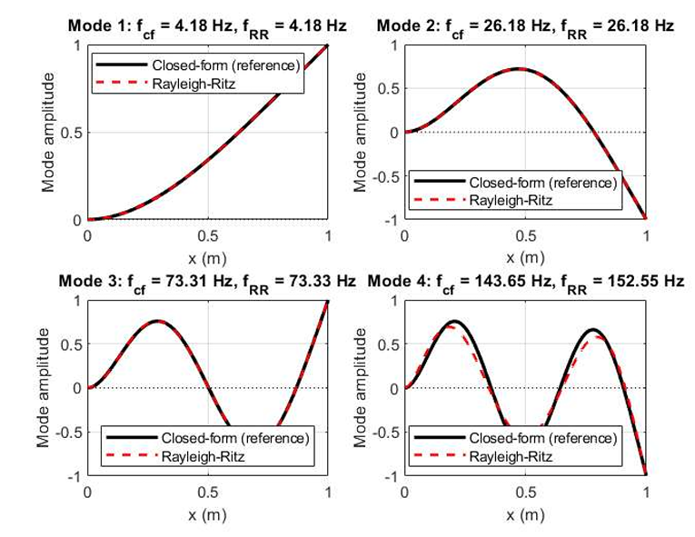
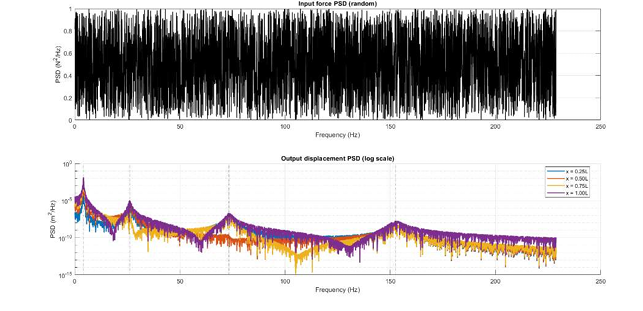

Overview
This project analyzes structural systems subjected to random vibration inputs. Two systems were studied: a spring-mass system and a cantilever beam. The Rayleigh-Ritz method was used to compute natural frequencies and mode shapes, which were then verified against closed-form solutions. Frequency Response Functions (FRFs) and RMS displacements under random vibration input Power Spectral Density (PSD) were computed using modal sum and direct inversion methods.
Cantilever Beam — Natural Frequencies
Closed-form solution for the natural frequencies and mode shapes are used for verification for the Rayleigh-Ritz method. From the results, the 1–3 modes are very accurate compared to mode 4. This is observed because of the number of admissible functions used for computation. The number of accurate mode shapes is approximately half of the admissible functions used. In this code N = 6, because of which only 3 mode shapes are accurate. The difference between the two methods in the 4th mode shape is 6%, which is very less and acceptable.
- Mode 1: fdf = 4.18 Hz, fRR = 4.18 Hz
- Mode 2: fdf = 26.18 Hz, fRR = 26.18 Hz
- Mode 3: fdf = 73.31 Hz, fRR = 73.33 Hz
- Mode 4: fdf = 143.65 Hz, fRR = 152.55 Hz (error 6.19%)
Similar to the spring-mass system, the verification function was run for the Rayleigh-Ritz approach. The overlay clearly shows the error is very little and calculated to be 4.035e-06.

Mode shapes overlay — Closed-form vs Rayleigh-Ritz and FRF verification
Random Vibration Response
Under random vibration input PSD, the response is dominated by the two well-separated resonance peaks within the analysis band at the natural frequencies. The RMS values of maximum displacement of 2.5 × 10⁻² m for mass 1 and 1.9 × 10⁻² m for mass 2.
Under random vibration, similar to what was observed in the spring-mass system, the response is dominated by the resonance peaks at the natural frequencies. As the random vibrations are introduced at the tip, there is more RMS displacement at the tip compared to the other distances.
- x = 0.25L: RMS = 5.4539e-03 m
- x = 0.50L: RMS = 1.8451e-02 m
- x = 0.75L: RMS = 3.5456e-02 m
- x = 1.00L: RMS = 5.4009e-02 m

Random-input PSD and response PSD of the cantilever beam
Conclusion
The findings of this study confirm a fundamental structural dynamics principle for real-world linear systems subjected to stationary random vibration: the root-mean-square (RMS) response is strongly biased toward the first few frequency modes. This phenomenon occurs because the Frequency Response Function (FRF) amplifies the energy of the input Power Spectral Density (PSD) at the system's first resonance. Because the majority of the integrated area under the response curve is concentrated around the first peak, the system's total energy is heavily influenced by its lowest-frequency behavior.
This finding has important effects on modeling efficiency from a design and engineering point of view. It implies that high-fidelity, computationally intensive models are not essential for precise safety and performance evaluations. Instead, a lower-fidelity model, like a simplified beam representation or a coarse finite element mesh, is usually enough if it is set up to accurately capture the first few natural modes and its associated damping. This conclusion applies to more than just simple beams; it also applies to complicated aerospace and civil structures.